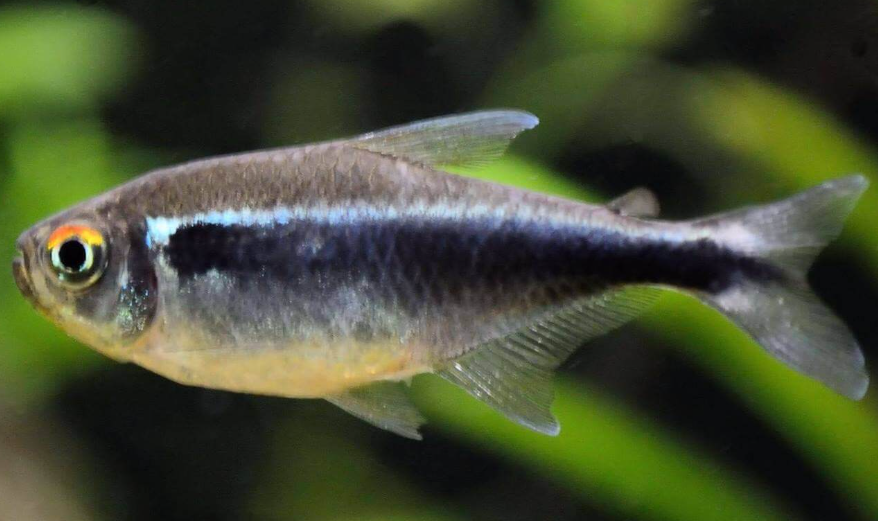

Systématique
- Ordre : Characiformes
- Famille : Characidae
- Genre : Hyphessobrycon
- Espèce : H. herbertaxelrodi
- Syn. : -
- Groupe : Tétras

Hyphessobrycon herbertaxelrodi, communément appelé Néon noir, est un petit characidé très apprécié pour son élégance sobre. Nommé en l'honneur de l'éditeur et auteur aquariophile Herbert Axelrod, il est souvent considéré comme une alternative plus robuste aux Néons bleus (Paracheirodon innesi).
Il mesure environ 3,5 à 4 cm. Son corps présente deux bandes longitudinales distinctes : une bande inférieure noire veloutée et une bande supérieure irisée, variant du vert pâle au blanc argenté selon l'éclairage. Le haut de l'œil est marqué d'un demi-cercle rouge-orangé caractéristique.
C'est un poisson extrêmement résistant, idéal pour les débutants souhaitant créer un aquarium communautaire planté.
C'est un poisson strictement grégaire qui doit être maintenu en banc d'au moins 8 à 10 individus. En groupe, il est plus actif, moins stressé et montre de meilleures couleurs.
Très pacifique, il occupe principalement la zone supérieure et médiane de l'aquarium. Il nage souvent en formation lâche. Il cohabite parfaitement avec d'autres tétras, des Corydoras, ou des cichlidés nains calmes.
Mode : ovipare.
C'est un diffuseur d'œufs. Le couple fraie au-dessus de plantes à feuilles fines (mousse de Java, Myriophyllum). Les œufs sont non adhésifs et tombent au sol.
Les adultes sont des prédateurs d'œufs et doivent être retirés après la ponte. Les alevins éclosent en 24 à 48 heures et nécessitent une nourriture très fine (infusoires, rotifères) avant d'accepter les nauplies d'artémias.
Dimorphisme sexuel : La femelle est visiblement plus ronde et plus haute de corps que le mâle, surtout lorsqu'elle est gravide. Le mâle est plus svelte.
Espérance de vie : Environ 3 à 5 ans en captivité.
Il est originaire du bassin du Rio Paraguay au Brésil (Mato Grosso). Il fréquente les petits cours d'eau, les affluents et les zones inondées, souvent dans des eaux calmes riches en végétation aquatique et en racines.
Répartition

Origine naturelle :
- Amérique du Sud.
- Brésil (État du Mato Grosso).
- Bassin du Rio Paraguay.
Paramètres de maintenance
Température : 23 à 28 °C.
pH : 5,5 à 7,5 (tolérant, mais préfère l'eau légèrement acide).
GH : 5 à 15 °dGH.
Courant : Faible à modéré.
Volume conseillé : Minimum 60 à 80 L pour permettre au banc de nager confortablement sur une façade d'au moins 60 cm.
Régime alimentaire
Régime : omnivore à tendance insectivore.
Dans la nature, il se nourrit de petits invertébrés et de crustacés.
En aquarium, il accepte tout type de nourriture sèche (paillettes, micro-granulés) de taille adaptée. Un apport régulier de nourriture vivante ou congelée (daphnies, artémias) favorise sa santé et sa reproduction.